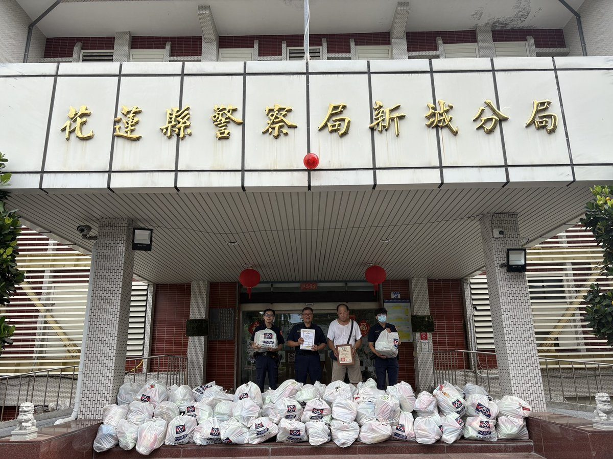
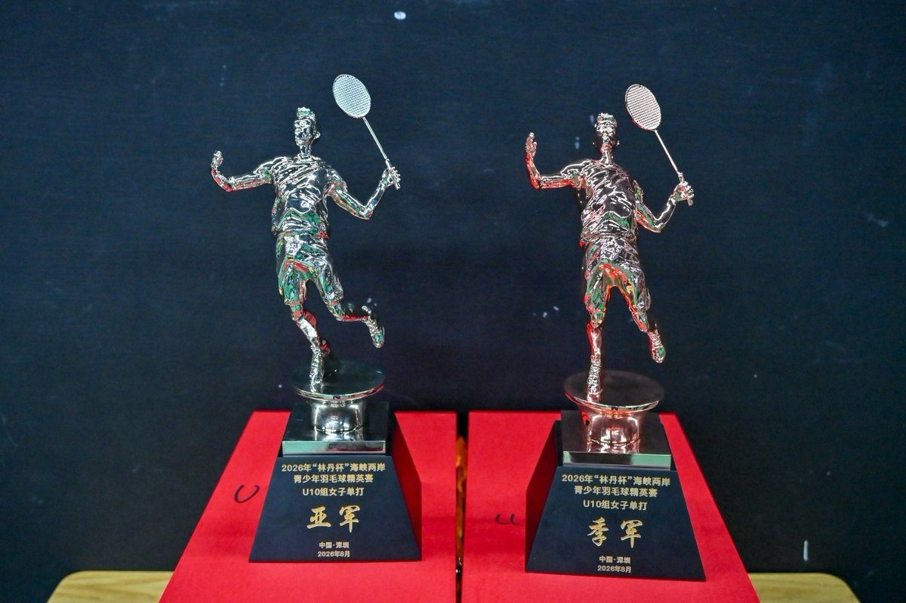
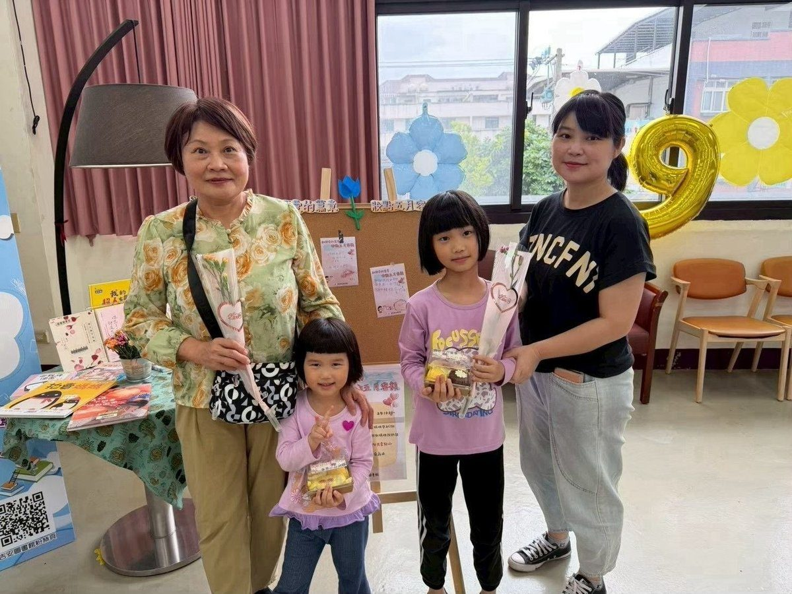
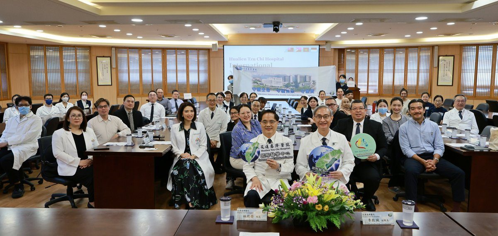
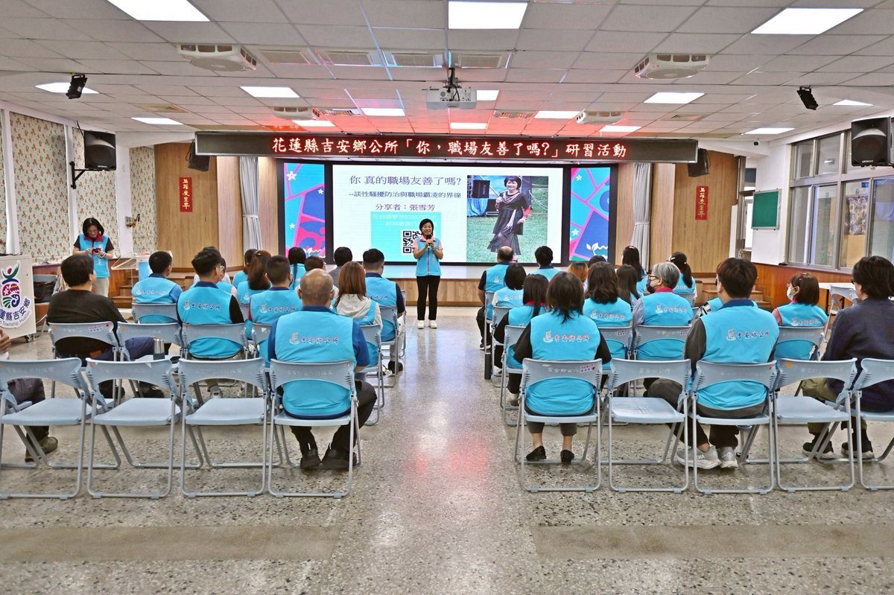
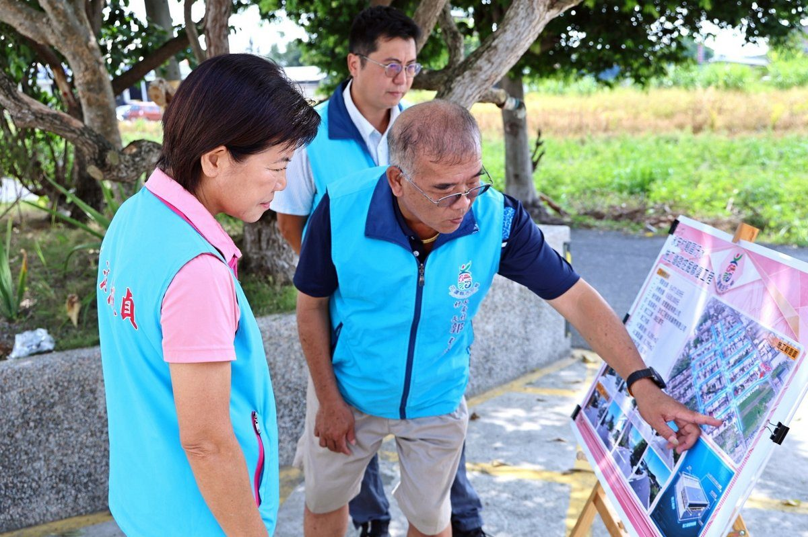
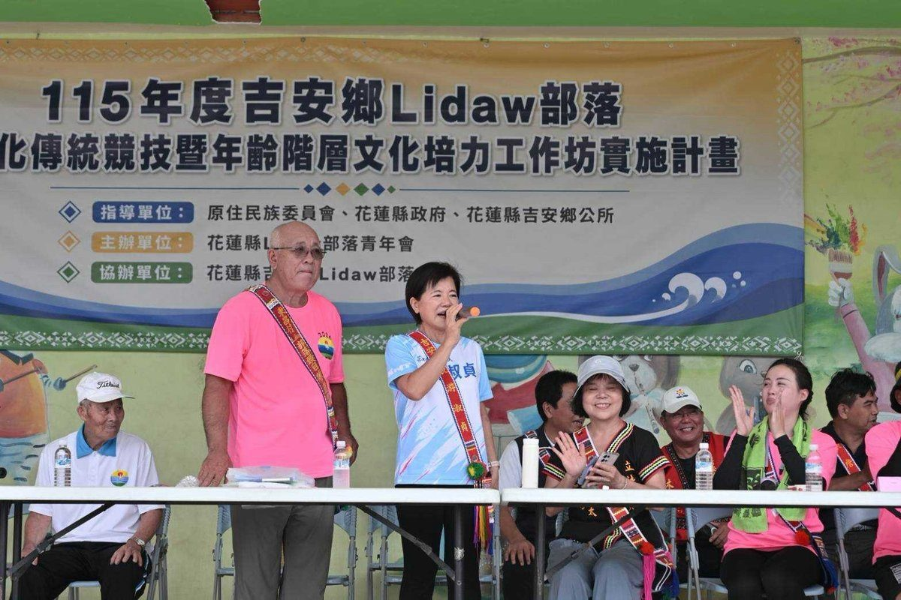

那荳蘭、宜昌豐年祭連袂登場 游淑貞見證文化薪火代代傳
吉安鄉那荳蘭與宜昌部落今（23）日連袂舉辦豐年祭，於那荳蘭部落聚會所熱鬧登場，雖然下雨仍湧入大量遊客與返鄉族人。鄉長游淑貞與部落頭目、貴賓共同見證青年返鄉投入祭典籌備，老中青幼接續展現歌舞才藝，彰顯阿美族歲時祭儀的文化韌…
閱讀全文 →吉安鄉那荳蘭與宜昌部落今（23）日連袂舉辦豐年祭，於那荳蘭部落聚會所熱鬧登場，雖然下雨仍湧入大量遊客與返鄉族人。鄉長游淑貞與部落頭目、貴賓共同見證青年返鄉投入祭典籌備，老中青幼接續展現歌舞才藝，彰顯阿美族歲時祭儀的文化韌…
閱讀全文 →
吉安鄉公所舉辦115年度祖父母節藝文活動，邀請林座劇團演出原創舞台劇《桃太郎的願望》，鄉長游淑貞與超過200位鄉親祖孫同堂看戲。活動融合親子劇場、閱讀推廣與祖孫合影，深耕孝親感恩文化，並於慶豐閱覽室展出22組家庭珍貴畫面…
閱讀全文 →
花蓮新城警分局於豐年祭現場深入部落，針對酒駕防制、反詐騙及防竊進行宣導，提醒返鄉族人飲酒後勿駕車，並鼓勵民眾主動通報可疑人車，透過警民合作共同守護部落治安與交通安全。…
閱讀全文 →
吉安鄉115年中元祈福普渡法會22日下午於慈雲山舉行，鄉長游淑貞率團隊主持，推廣環保心燈祭祀，並宣布慈雲山納骨櫃體重建案獲縣府補助4,000萬元，將提升抗震安全性。…
閱讀全文 →
可樂電子報小編/編輯 今（21）日下午4時30分，吉安鄉公所接獲中央氣象署發布國家級降 […]…
閱讀全文 →
吉安羽壇小將許林紘、董鈺竤於2026年林丹盃海峽兩岸青少年羽球精英賽揚威，分別拿下U12男子雙打第五名與U8分組賽冠軍，董鈺竤更獲最佳運動員交流獎。吉安鄉長游淑貞貼紅榜表揚，肯定孩子們的努力與堅持。…
閱讀全文 →
花蓮縣新城警分局與消防隊聯手，成功救援一名失足跌落深溝的醫院失聯病患。員警迅速反應，破壞障礙開闢通道，與消防人員緊密配合，將患者安全送醫。此次行動彰顯警消高效合作，呼籲民眾關心家人，緊急狀況速向警方求助。…
閱讀全文 →
吉安鄉北昌村保齡球好手洪基銘，於全國身心障礙國民運動會視障男子組保齡球賽事中勇奪銀牌。吉安鄉長游淑貞親往家中貼紅榜並頒發獎勵金，表彰洪基銘不畏身體限制、突破自我，為花蓮與吉安爭光的卓越成就。…
閱讀全文 →
國軍退除役官兵輔導委員會主委嚴德發十九日與吉安鄉長游淑貞，前往光華村登門拜訪百歲榮民夏宗澤，聽他細述當年投身花蓮開墾的艱辛歲月，並致贈禮盒致意，感謝他為國家與地方建設的辛勞付出。…
閱讀全文 →
可樂電子報小編/編輯 愛心無界限，善意跨越百里！遠在彰化的「中央聖道院」感念花蓮地方弱勢團體與家戶需求，特別跨 […]…
閱讀全文 →
可樂電子報小編/編輯 強攻扣殺響徹國際賽場！花蓮縣吉安鄉羽球隊小選手日前遠赴海外征戰，一舉在「2026年林丹盃 […]…
閱讀全文 →可樂電子報小編/編輯 聽見救護車急促笛聲，前方車陣卻卡在紅燈動彈不得，想讓路卻苦無空間——這樣的搶道驚險日常， […]…
閱讀全文 →
可樂電子報小編/編輯 暑假還不知道去哪裡溜小孩、陪長輩嗎？為迎接溫馨的「祖父母節」，吉安鄉公所與鄉代會今年特別 […]…
閱讀全文 →可樂電子報小編/編輯 吉安鄉公所為弘揚慎終追遠的孝道精神並緬懷先人恩德，將於8月22日（農曆7月初十）星期六下 […]…
閱讀全文 →
國民黨於花蓮小巨蛋舉辦團結大會，台北市長蔣萬安為花蓮縣長參選人游淑貞授旗，展現藍營輔選能量。現場集結徐榛蔚、傅崐萁等多位要角，共同誓言延續花蓮發展，朝「五合一全壘打」目標邁進，鞏固基層選票。…
閱讀全文 →可樂電子報小編/編輯 花蓮縣文化局「115年度藝術下鄉—玩藝列車」巡演，將優質表演藝術 […]…
閱讀全文 →
花蓮慈濟醫院積極拓展國際醫療版圖，舉辦亞太國際醫療研討會，匯聚台灣、印尼、菲律賓、越南等國專家，共同針對癌症治療、中西醫合療及護理照護進行深度交流。此次合作強化跨國醫療能力建立，將「醫療無國界」理念化為具體行動，提升病患…
閱讀全文 →
吉安鄉公所為強化公務人員對職場霸凌與性騷擾的認知，特舉辦「你，職場友善了嗎？」研習。鄉長游淑貞出席並強調落實職業安全衛生法新規定，透過多元性別與DEI理念推廣，攜手打造尊重、溫暖的公務服務團隊。…
閱讀全文 →
吉安鄉長游淑貞積極推動永安村道路修復工程，於地下污水工程完工後，無縫接軌啟動17條重要巷弄的路面刨鋪，總經費達1,061萬元，大幅提升鄉親通行安全與舒適度，並已規劃第二期工程。…
閱讀全文 →
吉安鄉里漏部落舉辦文化傳統競技與年齡階層培力工作坊，吉安鄉長游淑貞與族人見證新年齡階層rara’u成軍，透過技藝實作與競技展現南勢阿美族文化生命力。…
閱讀全文 →